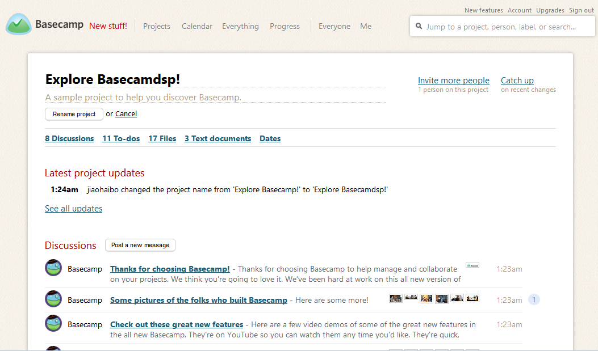

Present by @Jason
看板管理，常作“Kanban管理”（来自日语“看板”，カンバン，日语罗马拼写：Kanban），是丰田生产模式中的重要概念，指为了达到及时生产（JIT）方式控制现场生产流程的 过程工具。及时生产方式中的拉式（Pull）生产系统可以使信息的流程缩短，并配合定量、固定装货容器等方式，而使生产过程中的物料流动顺畅。
是指精益生产中的“准时化生产”，是一种目视化管理工具，是实现JIT生产的一个核心工具，利用kanban可对生产现场进行 可视化管理，对生产线的情况进行一目了然的管理。
是一种传递产品 需求信息的卡片，由下工序发往上工序，提醒上工序按需生产。是协助实现JIT的一种方式。
http://basecamp.com by 37Signals
go2top